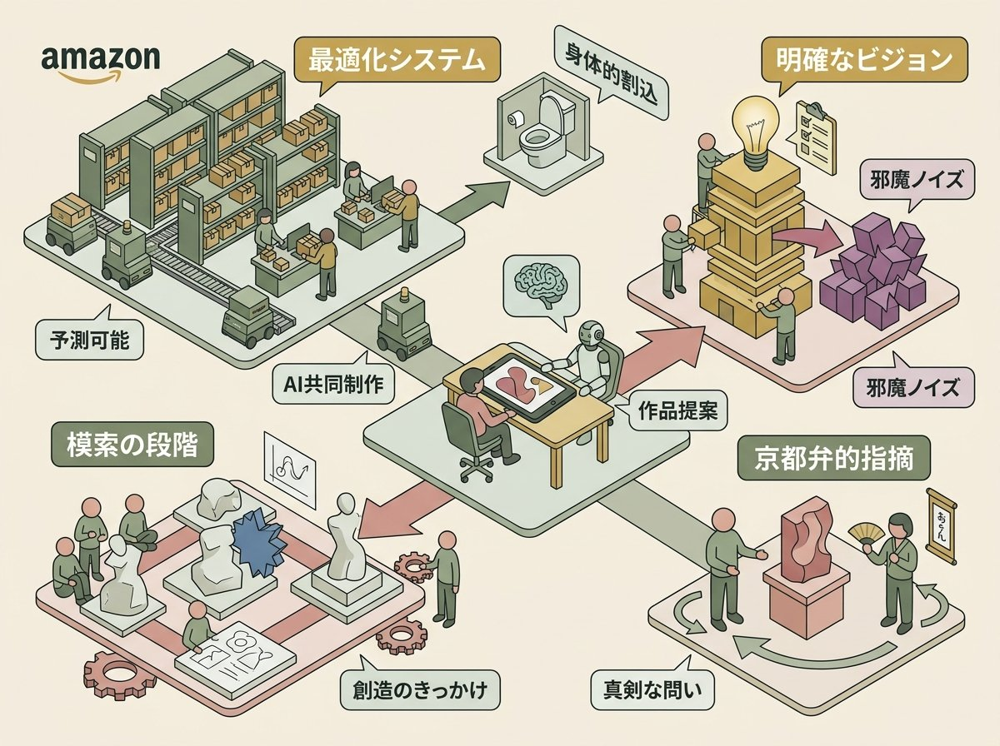
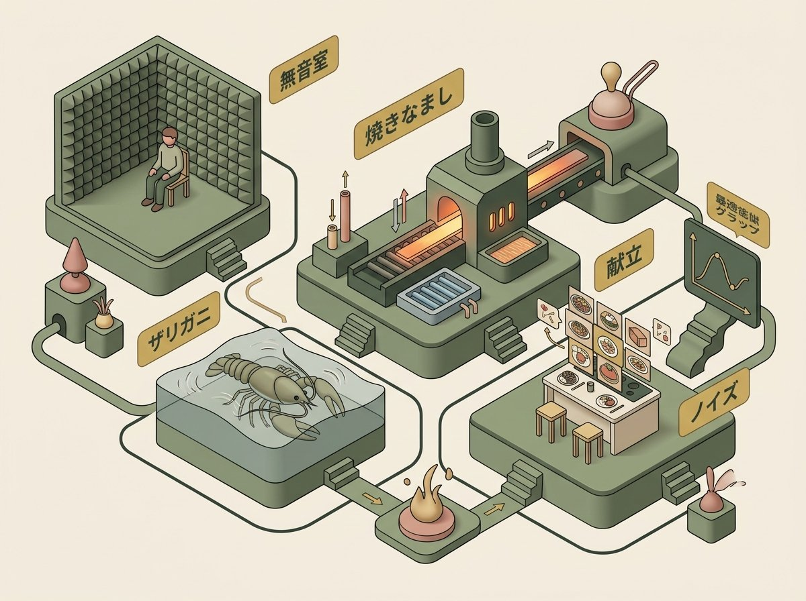
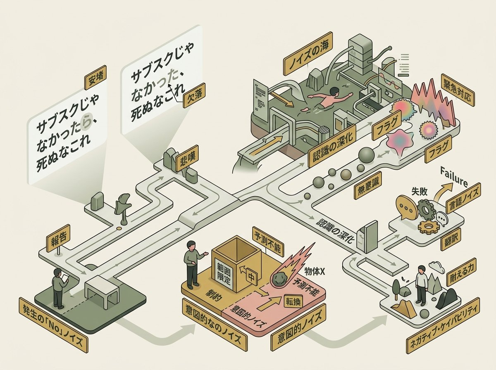
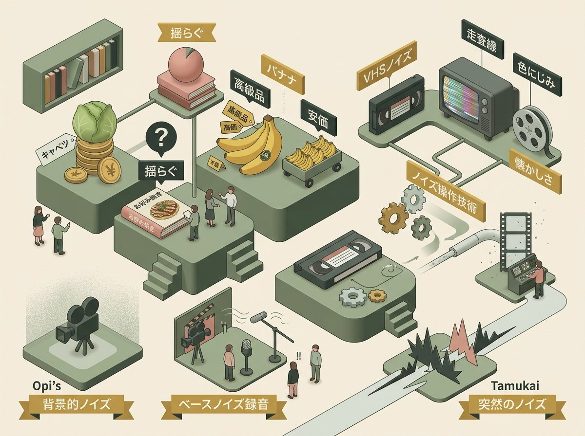
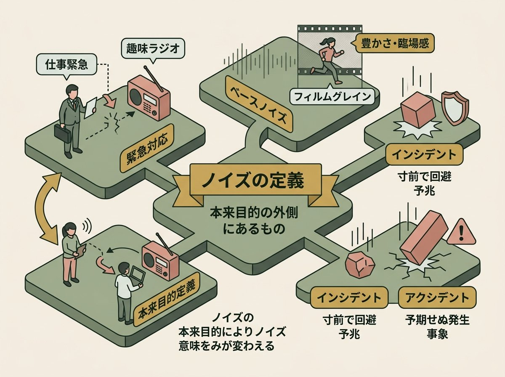
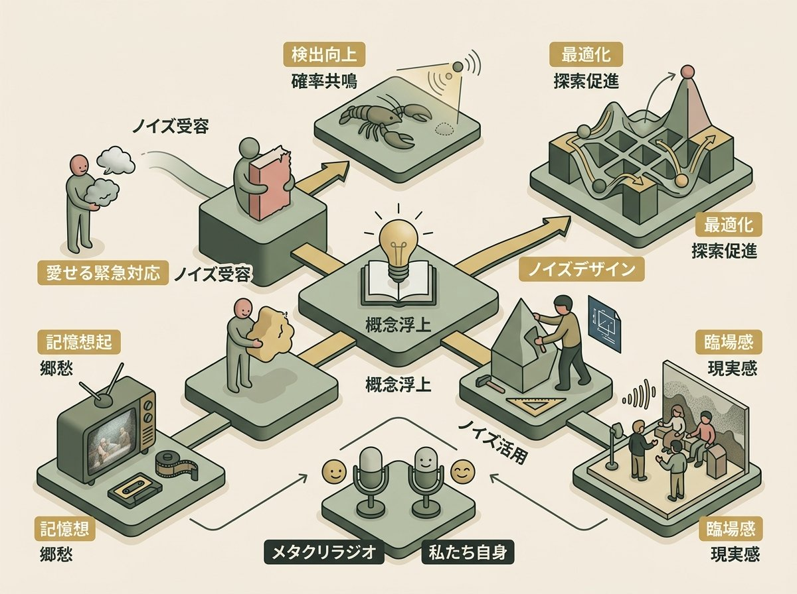

本来やろうとしていたことに、横から入り込んでくるもの。それを「ノイズ」と呼ぶなら、緊急対応もまたノイズの一種だろう。
このエピソードは、Opiの唐突な提案から始まった。
Opi
「メタクリラジオ今日のテーマは緊急対応にしようかね」
この提案自体が、まさにノイズだった。タムカイは前日、飲み会の最中にOpiから「ノイズの話したいんだよね」というメッセージを受け取っていた。どのノイズの話だ？——酔いの回った頭で考えても、答えは出なかった。そして当日、大里P（プロデューサー）が緊急対応で収録に参加できなくなったことで、「緊急対応とノイズ」というテーマが自然に立ち上がった。
Tamkai
「緊急対応もある意味ノイズみたいなもんじゃないですか。今、普通にこうしようと思ってるものに横から入り込んでくるものをノイズだと呼ぶなら」
本エピソードは、この問いを起点に、驚くほど多様な領域へと展開していく。トイレという日常的な「緊急対応」から、ザリガニの神経に針を刺す科学実験、刀鍛冶の焼きなまし技術、1週間の献立の最適化、そして映像制作におけるベースノイズの収録まで。
一見すると脈絡のない話題の連鎖だが、その底流には一つの問いが流れている。ノイズとは何か。なぜ私たちはノイズを嫌い、同時に必要としているのか。そしてノイズを「デザインする」とはどういうことか。
ノイズ（noise）
一般的には「望ましくない音」「不要な情報」を意味する。信号処理においては、本来伝えたい信号に混入する不要な成分を指す。しかし本エピソードで議論されるノイズは、より広義の概念として扱われている。「本来の目的の外側にあるもの」——この定義は、対話の終盤でタムカイによって提示され、ノイズ概念の再構成を促す。
ノイズは常に「何かに対して」ノイズである。音楽にとってのノイズと、無音室にとってのノイズは異なる。この相対性こそが、ノイズを考える上での核心的な論点となる。

1.1 トイレは緊急対応か
対話は、意外な方向から始まった。
Tamkai
「緊急対応ってさ、なんで発生するんだろうね。でも考えるとですよ。あの、よくテレビとかで見るアマゾンの倉庫のあのものをヒュンヒュン走ってる、走って渡してるやつ。あれ、なんか緊急対応なさそうですよね」
アマゾンの物流倉庫では、ロボットが商品を運び、人間がピッキングする。高度に最適化されたシステムの中では、「緊急」という概念自体が希薄になる。すべてが予測され、計画され、実行される。そこにノイズの入り込む余地はない。
しかし人間の身体は、そうはいかない。
Opi
「トイレってさ、緊急対応やね、きっと。緊急対応痛くなるやつとかね」
Opi
「規則正しく今日は7時5分におしっこするとかいう人はいないじゃない。必ず何かの途中にトイレという行為は差し込まれるわけじゃん。差し込まれる。緊急対応だよね、あれね」
トイレは確かに、予測不可能なタイミングで「割り込んでくる」。しかしタムカイは、これを「緊急対応」と呼ぶことへの違和感を示した。
Tamkai
「もともとやろうとしていたものが流れるタイプの緊急対応と、まあ、もともとやろうとしてたこともない、のべっとこう伸びている1日のタイムラインの中にお手洗いに行くっていうのと、まあ、またちょっと性質が違いますよね」
計画的行動と割り込み処理
認知心理学では、人間の行動を「計画的行動（planned action）」と「反応的行動（reactive action）」に分類することがある。トイレという行為は、「今日どこかで行くだろう」という漠然とした予測の中に存在しながら、具体的なタイミングは身体からの信号によって決まる。これは計画と反応の中間領域にある行動と言える。
一方、大里Pの緊急対応のように「もともとやろうとしていたものが流れる」ケースは、外部からの割り込みによって計画そのものが変更される。コンピュータサイエンスにおける「割り込み処理（interrupt handling）」の概念が、ここでは人間の時間管理に適用されている。
1.2 愛せる緊急対応、愛せない緊急対応
対話は、ノイズへの感情的反応の違いへと深まっていった。
Tamkai
「なんなんですかね、その突然起こるものを愛せる時と愛せない時。えっと、今ので言うと、ちょっと時間の過ごし方として突然入ってきたもので、おいってなるやつもあれば、僕まあ最近こうAIと壁打ちしながらものを作ってて、もう明らかにこっちに行きたい、あの僕が作りたいものに対して手伝ってくれっていうビジョンがはっきりしてる時の、なんか別の案をキュンって差し込まれても、ちょっと今はいいわっていうノイズと」
ビジョンが明確なとき、別の提案は「ノイズ」になる。しかし、ビジョンがないとき、予想外の提案は「きっかけ」になる。
タムカイは、最近AIと共同で制作した作品を例に挙げた。
Tamkai
「今俺にビジュアル的なビジョン全くないから、まずは作ってくれっつって言ってきて、面白えじゃねえかっつって。で、面白くなっちゃったから、それをギューって深めていって」
完成した作品をOpiに見せたところ、予想外の反応が返ってきた。
Tamkai
「やっぱりもうできて嬉しくなったから、Opiたんに見て見てっつって送ったら、お、なんか最近ちょっとデザインのテイスト変わりましたねってまず言われて、なんか優しい雰囲気からクール系になったんですかって言われて」
トンマナ（トーン＆マナー）
広告・デザイン業界で使われる用語で、「トーン＆マナー（tone and manner）」の略。作品やブランドの一貫した雰囲気や表現スタイルを指す。タムカイの従来のデザインは「優しい雰囲気」だったが、AIとの協働で生まれた作品は「クール系」「サイバーパンク」的なテイストになっていた。
この変化についてタムカイは、「全く何のビジョンもなく作っていたので」と説明している。ビジョンの不在が、かえって新しいスタイルの探索を可能にした。これは、制約の有無が創造性に与える影響を示す興味深い事例である。
Opiの指摘は、京都弁のような婉曲さを含んでいた。
Tamkai
「これなんかちょっと高次元なクリエイター同士の、なんか、なんか京都京言葉みたいにかっこいいねって褒めてきてるんだけど、裏の真意があったやつっていうか」
Opi
「こうよろしょうまんなみたいな。ぶぶ漬け食べていくみたいな」
Tamkai
「しっかり流行りの勉強もされてるんですなみたいな感じの」
Opi
「なかなか若い人が好きそうなデザインですなあ」
この京都弁的やりとりの背後には、真剣な問いがあった。普段と異なるトンマナの作品を出してきたとき、それをどう受け止めるか。褒めるべきか、疑問を呈するべきか。
Opi
「多分ね、そこは興味で言うと、トンマナよりも実際のこう出来上がったものそのものみたいな方に、多分まず面白さを感じちゃうから。そういう意味ではまあ、トンマナはね、こう、後でいいやみたいな」
Opiは、トンマナよりも「骨格」を見る。これは、彼が雑誌編集の世界で培ったアプローチでもある。「ラフがちゃんと切れてれば、まあ別にそれはデザイナーさんにお任せで」——骨格ができていれば、表層的なスタイルは後から調整できる。
1.3 「ラブストーリーは突然に」
話題は、愛せる緊急対応の極限形態へと移った。
Opi
「愛せる緊急対応っていいフレーズだなって思って。ああ、なんだろうとか思って。愛せる緊急対応ってあれか、あれだ。ラブストーリーが突然にやってくるやつだ」
小田和正の名曲のタイトルを引きながら、Opiは恋愛という究極の「割り込み」を例示した。
Tamkai
「そうそうそう、ラブストーリー突然にやってきたり。なんでしょうね、その。まあ、緊急対応の場合って、やっぱり本当はやりたいことがあって横から来ちゃうので、まあ多くの場合、嫌々にやっぱりなるじゃないですか。ああ、もうめっちゃやりたいことあるのにみたいな。けど、こう、心に余裕があると、まあ、そういうこともあるかってなったり」
Opi
「まあでもラブストーリーがさあ、突然にやってきたら緊急対応はするよね」
Tamkai
「緊急対応しちゃうと思いますね」
ラブストーリーは突然に
小田和正が1991年にリリースした楽曲。テレビドラマ『東京ラブストーリー』の主題歌として大ヒットした。「何から伝えればいいのか 分からないまま時は流れて」という冒頭の歌詞は、予期せぬ出来事に対する人間の戸惑いを表現している。
恋愛を「緊急対応」として捉えることには、ある種の真実がある。恋愛は計画できない。それは「突然に」やってきて、既存の計画や優先順位を根本から覆す。しかしその割り込みを、人は「愛せる」。ここに、ノイズの両義性が最も鮮明に現れている。
タムカイは、緊急対応を愛せるかどうかの条件を整理した。
Tamkai
「でもなんか緊急対応自体に愛され度がある場合と、えっと、愛する主体である私の中に愛する余裕がある場合とがありますよねっていうのをちょっと思って。そう、でもなんかね、そのちょっと。緊急対応の内容自体がとても愛せることってそんなにやっぱりないので、どっちかというと、こう愛する側の私に許容度がないとダメなのかな」
ノイズを愛せるかどうかは、ノイズ自体の性質だけでなく、受け手の状態にも依存する。心に余裕があるとき、同じノイズでも「きっかけ」として受け取れる。余裕がないとき、それは単なる「邪魔」になる。

2.1 神経に針を刺す科学者たち
対話は、予想外の方向へ展開した。
Opi
「でも、あれだよね、そうだからさ、朝起きてさああ、今日も1日、2、3回はトイレ行くだろうなって認識はしないよね」
Tamkai
「しない」
この何気ない確認から、Opiは唐突に「無音室」の話を持ち出した。
Opi
「今さ、このノイズがないっていう話があったじゃない。じゃあ仕事でさ、無音室って入ったことあんのよ」
Tamkai
「いや、ありますあります。僕もありますね」
Opi
「もうすげえ気持ち悪いじゃん」
Tamkai
「あれやばいっすね」
Opi
「で、なんかあれ弱い人だとマジでなんかね、発狂に近い状態になっちゃうんだって」
無音室——外部からの音を完全に遮断し、反響も吸収する空間。そこでは、自分の心臓の鼓動や血流の音が聞こえるという。長時間滞在すると、精神的な不調を訴える人もいる。
Opi
「だからもうある程度人間ってノイズが入ってないと、ダメなんだみたいな。ザリガニの話しようよ」
無音室（無響室）
外部からの音を遮断し、内部での音の反響を防ぐ特殊な部屋。壁面に吸音材を配置し、床も格子状の構造で音を吸収する。音響機器のテストや、心理学・聴覚研究に使用される。
世界で最も静かな無響室として知られるマイクロソフト本社の施設は、-20.6デシベルという記録を持つ。人間が知覚できる最小の音（0デシベル）よりもさらに静かな空間では、普段は意識しない体内の音が際立って聞こえる。この経験は、人間が常に「ノイズの海」の中で生きていることを逆説的に示している。
ザリガニの話は、さらに意外な展開を見せた。
Opi
「ザリガニってね、まあ、川辺にいるわけじゃないですか。ザリガニ。で、水の流れがさ、強いと、自動的に体毛みたいなのが逆立って、流れにこう流されないようにするんだって。なんだけども、緩やかな流れだと、当然そのね、体毛みたいなやつが、こう活性化しないんだって」
ザリガニは、水流を感知して体毛（感覚毛）を逆立てることで、流されないように体勢を保つ。しかし、緩やかな流れだとこの反応が起きない——つまり、弱い信号は検出できない。
Opi
「で、そんでね、もうどういう動機でやったか全然わかんないんだけど、そのザリガニね、神経にちょっと針突っ込んで、ノイズをね、入れてたんですって。そしたらそのノイズがええと、同じ周期で、あのちゃんと、緩やかな流れを認識するようになったんだって。つまりね、ノイズを足すことで検出率が上がるっていう」
確率共鳴（stochastic resonance）
非線形システムにおいて、適度なノイズを加えることで、弱い周期的な信号の検出能力が向上する現象。1981年にベンツィ、スダン、ヴルピアーニらによって理論的に予測され、その後、物理学、生物学、神経科学など多くの分野で実験的に確認された。
ザリガニの実験は、神経科学における確率共鳴の古典的な例である。神経系に適度なノイズを加えると、通常では検出できない弱い刺激（緩やかな水流）を感知できるようになる。これは、ノイズが常に有害であるという直感に反する現象であり、「適度なノイズ」が情報処理において積極的な役割を果たすことを示している。
Tamkai
「今ね、全然何言ってるかわかんなくなったんですけど、俺だけかな。いや、緩やかなところにいるやつにビリビリしたってことそう」
Opi
「そうそうそう。だから例えば、えっと、わかんないけど、あの科学の実験とかでさ、すごく検出が難しい、こう、小さなノイズがあるとするじゃない。で、そこにいい塩梅のノイズを足してあげると、そのちっちゃなノイズがめっちゃ発見しやすくなるっていう」
Tamkai
「ノイズがあることによって、なんかこう、小さなものが発見できるみたいに見える。なんなんでしょうね、それ。ちょっと面白いすね。別ので言うとこうだよみたいなのと、もう一個ぐらい出せたらいいな」
2.2 焼きなまし法——冶金からコンピュータサイエンスへ
Opiは、もう一つの例を持ち出した。
Opi
「そっかでね、なんか調べたらね、理屈としては剣あるじゃん。剣、人を切る、ソードであれ作る時にさ」
Tamkai
「聞いたことありますよ、焼きなまし」
Opi
「まあ最初熱くしてさ、まあ、だんだんだんだん温度を下げていくと、こういい感じのができるって。で、中の原子の動きとしては、ノイズが入ってくることで、原子の動きが変わって、強くなるんだって」
刀剣の製造において、金属を高温に熱してから徐々に冷やす「焼きなまし」という工程がある。この過程で、金属内部の原子配列が最適化され、強度が増す。
Tamkai
「あの叩く方のっていうことですかそれともそう、あの、強いていく過程で、なんか、あの合金なんかもそうですよね。純粋なやつよりも、ちょろっと入れると方が強くなるみたいな」
焼きなまし法とシミュレーテッド・アニーリング
焼きなまし（アニーリング）は、金属を高温に加熱してから徐々に冷却することで、内部応力を除去し、結晶構造を安定化させる冶金技術。この過程で、原子は高温状態では自由に動き回り（ランダムな探索）、温度が下がるにつれて最も安定な配置に落ち着く（最適解への収束）。
この原理は、コンピュータサイエンスにおける最適化アルゴリズム「シミュレーテッド・アニーリング」として応用されている。1983年にカークパトリック、ジェラット、ヴェッキにより提案されたこのアルゴリズムは、組み合わせ最適化問題を解く際に、確率的に「悪い解」への遷移を許容することで、局所最適解に陥ることを防ぐ。
「ノイズ」（ランダムな摂動）を意図的に導入することで、全体として良い解に到達できる——これは確率共鳴と同様、ノイズの積極的な役割を示している。
Opiは、より日常的な例で説明を試みた。
Opi
「もっと簡単に言うと、一週間の献立っていうのがあるとするじゃないですか。で、えーと、月曜から日曜まで、7回の夕ご飯のメニュー」
Tamkai
「例えば月曜日は生姜焼き」
Opi
「で、火曜日は焼き魚、で、水曜日はキーマカレーとか入れたりして、で、木曜日はなんか中華とかにしたりしてみたいな感じでさ、この一週間の」
Tamkai
「最適解みたいなね」
Opi
「最適解を出そうとするじゃない。で、そうするとさ、ちょっとずつバランスを変えていくわけじゃん。あ、なんかキーマカレー、なんか日曜日の昼挟んだら、次の水曜日にキーマカレーがどうなのかなとかさ、あ、だったら水曜日、中華にしようかなとか、こうちょっとずつ変えていくじゃない」
2.3 献立の再編成——ノイズが引き起こすリシャッフル
献立の比喩は、シミュレーテッド・アニーリングの本質を見事に捉えていた。
Opi
「だからずっとそのサイクルをこう回していると、最終的には一番バランスのさ、しっくりくる1週間のメニューがうんうんになっていくわけじゃないですか。最初がさ、バーッと適当にこう献立を置いたのが、こう、熱い状態だとしたら、で、そこにはいろんなもん突っ込んどけみたいな。だんだんだんだんこう温度が下がってくると、新しいものを受け入れなくなるみたいな」
高温状態では、献立はランダムに入れ替わる。冷えていくにつれて、安定した配置に落ち着く。しかし、完全に固まった後に「ノイズ」が入ると——
Tamkai
「まあだからそうなった時に、例えばまあちょっと事情で鶏肉がもう今や市場にないんですわって言われると、まあ、それがノイズとなって、今まで真ん中に入ってたチキン南蛮の日が、まあ実現不可能になって、え、じゃあ何入れるっけって、もう1回なんかハンバーグを入れると、おや、ここにハンバーグを入れるということは最高だと思っていた月曜日の生姜焼きがバランスが悪くなるぞみたいに、また次進化していくみたいな」
Opi
「そうそう。だからさ、途中でさ、まあ、固まりつつあるところにさらに入れると再編成が起こるみたいなね。が、どっちかっていうと、そのそれでこう視点が変わるというよりも、なんか手札の再編成が起きるみたいな、そういうことなのかもしれないよね」
局所最適解と大域最適解
最適化問題において、「局所最適解（local optimum）」とは、近傍の中では最良だが、全体で見ると最良ではない解を指す。「大域最適解（global optimum）」は、全体で最良の解を指す。
献立の例で言えば、「生姜焼き→焼き魚→キーマカレー」という並びが「局所最適」かもしれないが、鶏肉が手に入らなくなるという「ノイズ」によって強制的に再編成されることで、より良い組み合わせ（大域最適に近い解）が見つかる可能性がある。
このように、意図せぬ制約（ノイズ）が、固定化した思考や計画を揺さぶり、新しい可能性を開くことがある。これは、前回のエピソードで議論された「ブリコラージュ」——手元にあるもので何とかする創造性——とも通底するテーマである。
Tamkai
「それはありますね。で、それをなんかこう、意図的に起こすこともね、ありますし、やっぱり再編成できない。あの、なんかもう編成が変わっちゃったってパニックるよりは、再編成すっかと思える方が、うん、なんかいい気がするというかね。創造性って考えるときに、何かこう、今ないものを作って価値を提供するみたいなことを創造性の定義として言われることもあるんですけど、さっきのその再編成するって、実は作り出しているというよりは、まあそうか、新たな調和を作るみたいなものも入るなって、今話ししてて思いましたね」
ここでタムカイは、創造性の新しい定義を提示した。創造性は「無から有を生む」ことだけでなく、「既存の要素を再編成して新たな調和を作る」ことでもある。ノイズは、その再編成のトリガーとなりうる。
Opi
「だからあれだね、使えないおじさんがリストラされちゃうのはクリエイティブってことだよね」
Tamkai
「そうですね。大きい意味で見るとクリエイティブの発揮。リストラクチャリングだもんね」

3.1 「ラ」が一文字ない
対話の中で、タムカイは興味深いエピソードを紹介した。
Tamkai
「昨日Opiとチャットしててね。Opiとのあのコミュニケーションももうこれでね、半年近くになってきたので、だんだん分かってきたんですけど、まあよくほら、フルスロットルのというか、超ハイエンドモードの俺になると、みんながあの戸惑いを覚えるんだってよく言っていて」
前夜、Opiは自身が開発中のサービスのAPI使用量を報告した。サブスクリプション契約だから助かっているという意味で、「サブスクじゃなかったら、死ぬなこれ」と書いたつもりだった。
Tamkai
「で、ラが抜けてた。ラが抜けてるんですよ。それでか、コミュニケーションの不成立でわかるんですよ。だからそういうことだろうなって分かってるんだけど、そのラが一個ないっていうないノイズによって、どっちも取れるようになっちゃって」
「サブスクじゃなかった、死ぬなこれ」——「ラ」が一文字欠けただけで、意味が反転する。「サブスクじゃなかったら（仮定）、死ぬ」という安堵の表現が、「サブスクじゃなかった（事実）、死ぬ」という悲嘆の表現に変わる。
Opi
「ああ、ないノイズって面白いね。欠落だよね」
Tamkai
「そう、欠落によって、その普通のメッセージが、えっと、メッセージとノイズを両方を兼ね備えた感じになって。で、僕すげえびっくりして、えって大丈夫なんすかってなったんですけど」
欠落としてのノイズ
通常、ノイズは「付加されるもの」として理解される。しかし、「ないノイズ」という概念は、欠落もまたノイズとして機能しうることを示している。
言語学的に見れば、これは「ゼロ形態素」の問題と通底する。日本語では主語の省略が許容されるため、省略された主語が何であるかによって文の意味が変わる。また、書き言葉においては、句読点の有無や改行の位置が意味を変えることもある。
コミュニケーション論では、「沈黙」もメッセージとなりうることが知られている。何かを言わないこと、何かを含めないこと——その欠落自体が、受け手に解釈を強いる。タムカイとOpiのチャットでの出来事は、欠落が「ノイズ」として作用する具体例と言える。
3.2 ブライアン・イーノの「わけわからんカード」
Opiは、ノイズを意図的に導入する先行事例を紹介した。
Opi
「僕はやっぱあれか。ブライアン・イーノがさ、なんかわけわからんカード作ってさ、制作行き詰まった時に、そのカードにランダムにわけわからんこうあの指示が書いてあって、それに従うっていうのが、あの話を前に聞いたことがあって、例えばデザインで言ったらさ、まあ、絶対にお前が受け入れがたい色を使えって、もう指示が書いてあってはどうですかじゃないの使えな」
Tamkai
「使えね。それも面白いですね。わかるわかると思って。まあだから、ある意味それは制約がクリエイティビティをまあ高めるっていうのともね、近いような気もしますし」
オブリーク・ストラテジーズ（Oblique Strategies）
イギリスの音楽家・プロデューサーであるブライアン・イーノと画家ピーター・シュミットが1975年に制作したカードセット。100枚以上のカードに、「最も重要でないものを強調せよ」「間違いを隠された意図として扱え」「繰り返しは変化の一形態である」といった指示が書かれている。
創作活動が行き詰まった時に、ランダムに1枚を引き、その指示に従って作業を進める。これは、意図的にノイズ（予想外の指示）を導入することで、固定化した思考を揺さぶる手法である。デヴィッド・ボウイのベルリン三部作の制作にも使用されたことで知られる。
タムカイが言及した「制約がクリエイティビティを高める」という議論との関連で言えば、オブリーク・ストラテジーズは「外部から強制される制約」と「自発的に選んだ制約」の中間に位置する。カードを引くという行為は自発的だが、出てくる指示は予測不可能である。
しかしOpiは、これを単純な「制約」とは区別した。
Opi
「なんか、制約っていうと、こう、こっからここまでみたいな、なんかイメージなのよ。なんか宇宙からの物体Xが来るのはちょっとその、その」
Tamkai
「微分疾患というか。まさにノイズ」
制約は範囲を限定する。しかしノイズは、外部から飛来する「物体X」のように、予測不可能な方向から入ってくる。この違いは微妙だが重要だ。制約は「この中で考えよ」という指示であり、ノイズは「これについて考えよ」という強制的な注意の転換である。
3.3 カラーバス効果——ノイズに満たされた日常
対話は、私たちが常にノイズに囲まれているという認識へと深まった。
Opi
「カラーバス効果ってさ、要はそのノイズ自体はいっぱい常にあって。で、そのノイズをこう、普段あの、全部受け取ってると頭がおかしくなるから、人間の体ってそれが自動的にシャットアウトされることになってるんだけど、まあ、多少こうフラグを立ててあげると、ある特定のノイズだけこう入力するような仕組みになってるよっていうのが、一応多分カラーバス効果の話じゃないですか」
カラーバス効果（Color Bath Effect）
ある特定の事柄を意識すると、それに関連する情報が目に入りやすくなる心理現象。例えば、赤い車を買おうと思うと、街中で赤い車ばかりが目につくようになる。
認知心理学的には、これは「選択的注意（selective attention）」の一種と説明される。人間の脳は、毎秒膨大な量の感覚情報を処理しているが、そのほとんどは意識に上らない。意識に上るのは、生存に関わる情報か、意図的に注意を向けた情報だけである。
カラーバス効果は、意図的に「フラグを立てる」ことで、通常なら無視される情報（ノイズ）を拾い上げる技術と見ることもできる。これは、ノイズを「愛する」ための一つの方法——ノイズへの感受性を意図的に高める——を示唆している。
Opi
「だからこうノイズがないっていう考え方もあるし、普段ノイズに僕らは満たされてるんだけど」
Tamkai
「全部まあね、処理されてないという」
Opi
「そうそう、処理されてないだけなんだけど、こう、周りにノイズがあるっていう。ほら、でもほら、カラーバス効果の説明せずに、皆さん静かにしてください。はいっつってエアコンの音が聞こえてきましたとかやるじゃないですか。皆さん、この部屋に黄色は何種類あるでしょうかやるじゃないですか。ワークショップの人。普段の生活にとっては、その舞台が何色であるとか、エアコンの音とかはノイズなんだけど、まあ普段僕らはノイズに包まれて生きてるわけじゃない」
私たちは、ノイズの海の中を泳いでいる。しかし、そのほとんどは意識されない。意識されるのは、「フラグが立った」ノイズだけだ。そして、無視できないほど大きくなったノイズ——緊急対応として対処を迫られるノイズ——だけが、「ノイズ」として認識される。
Tamkai
「緊急対応のことを思いながら、そのノイズ自体はとてももう満ち溢れているんだけど、無視し得ないやつ、このことをノイズと呼ぶノイズとして上がってくるのかもしれないですね」
3.4 Failureと「失敗」——翻訳のノイズ
対話は、言語そのものが持つ「ノイズ」へと展開した。
Tamkai
「ちょうどね、そのあれです。ヤフーの安宅さんがあのSNSでfailureっていう英単語を失敗としか訳せないのが良くないんじゃないかっていう話」
Tamkai
「本当はある、その工学とかで言うと、何か望んだ状態に対してうまくいってないことっていうのを英単語としては否定しているんだが、日本語の失敗っていうと、その負けの字が入っていたりとかするせいで、責任問題とかがやっぱ出てきてしまう。なんで失敗を許容しようっていう言い方をした時に、その人のことを許そうみたいなニュアンスがちょっと横から差し込まれてしまう」
Failureと「失敗」の意味論的差異
安宅和人（慶應義塾大学教授、ヤフー株式会社CSO）がSNSで指摘した問題。英語の"failure"は、工学的には「システムが期待通りに機能しない状態」を中立的に指す。しかし日本語の「失敗」は、「失う」「敗れる」という否定的な漢字から構成され、道徳的・感情的なニュアンスを帯びやすい。
「失敗を許容する文化を」というスローガンが、日本語では「失敗した人を許す」という意味に滑りやすいのに対し、英語の"embrace failure"は「うまくいかない状態から学ぶ」という意味に近い。この翻訳の困難さは、言語自体が持つ「ノイズ」——意図しない意味の付加——を示している。
Opi
「ネガティブケイパビリティや」
Tamkai
「そうそう、あ、なんかつかねえ、っていうつかないかってなるんですけどね」
ネガティブ・ケイパビリティ——答えが出ない状態に耐える力。これもまた、「うまくいかない状態」を受け入れる態度の一つである。Failureを「失敗」と訳すことで、この態度の獲得が難しくなる。言語という翻訳装置自体が、ノイズを生んでいる。

4.1 キャベツが1000円になる世界
話題は、外部環境の変化がもたらす「ノイズ」へと移った。
Tamkai
「ずっとその人がそれ担当しちゃっててね。さっきので言うと、もう1週間のメニューもガチガチ固定されてるんだけど、もう今、世の中的に鶏胸肉の値段がめっちゃ上がってて、節約メニューといえば鶏胸ではないよみたいな世界になった時に、頭がそれで固まってるとね、きついよね」
Opi
「みたいなのもほら、一時期、去年だか一昨年ぐらいさ、キャベツがさ、やべえことになってたじゃん。1000円とかなった。1000円とか。一玉お好み焼き作ろうと思ってさ。あの、昔はさ、あの、もうお金がないから肉なしのお好み焼きねとか言ってさ、言ってたのがさ、肉の方がちょっと肉より高いっていうね」
キャベツが一玉1000円。お好み焼きという料理の前提そのものが揺らぐ。この「ノイズ」に対して、どう対応するか。
Opi
「でもほら、キャベツが1000円の横でさ、普段ちょっとさ、俺が大好きなんだけど、気軽には手がこう取れない。あのウニの瓶詰め1000円が置いてあるわけじゃない。で、ウニの瓶詰めってさね、あの細長いさ、やつってさ、めっちゃなんかちょっとしか入ってないわけですよ」
Tamkai
「分厚いですからね、ガラスがね」
Opi
「ガラスが分厚くてさ。でも中はもうちょっとしか入ってないみたいな感じでさ。それが同じさ、1000円で並んでた時にさ、バグるよね、これは俺は今、ウニ瓶を買っていい気がするみたいな。ダメだよみたいな」
相対的価値判断のバグ
人間の価値判断は、絶対的な基準ではなく、比較によって形成されることが多い。行動経済学では、この現象を「アンカリング効果」や「フレーミング効果」として説明する。
キャベツが1000円という状況は、通常の価値判断の基準を狂わせる。普段なら「高い」と感じるウニの瓶詰めが、キャベツと同じ価格であることで、相対的に「お得」に見えてしまう。この「バグ」は、外部環境の変化（ノイズ）が認知に与える影響を示している。
タムカイは、このノイズと「世代間の認識差」を結びつけた。
Tamkai
「何かが出てきた時に、それに対して便利だなって思うっていうのは、その前の大変な時を知っているからそう思うのであって。なんでキャベツが158円で売ってたのを知ってるから、1000円のキャベツっていうものにうわってなるけど、1000円でずっと張り付いてて、その時代に生まれて育っちゃったら、キャベツという名の高級野菜。バナナで親が言ってたなと思い出したんですよ。昔は高くてねって言うけど、もう僕らの時でも生まれたら、バナナ、一番安い果物の中の一個ぐらいになってたから」
かつてバナナは高級品だった。今のキャベツのように。しかし、生まれた時からバナナが安価だった世代には、「昔は高かった」という認識は実感を伴わない。同様に、もしキャベツが高価な時代に生まれた世代がいれば、彼らにとって「キャベツ=高級品」は当然の認識となる。
4.2 ノイズと記憶の結びつき
対話は、ノイズの別の側面へと展開した。
Opi
「ちょっと面白いものがさ、ノイズってさ、ノスタルジーとも結びついちゃったりするじゃない。ああ、例えばさ、VHSとかのさ、ノイズがさ」
Tamkai
「ああ、ノイズがさ」
Opi
「とかもそうだし、まあ特に映像とかだとさ、こうノイズが入ってると、その懐かしい感じがするみたいな」
VHSテープ特有のノイズ、走査線、色のにじみ。現代の高精細な映像から見れば、これらは「劣化」であり「ノイズ」である。しかし、そのノイズが「懐かしさ」を喚起する。
VHSとアナログメディアのノスタルジー
VHS（Video Home System）は、1976年に日本ビクターが開発した家庭用ビデオ規格。2000年代にDVDに取って代わられ、2016年に最後のVHSデッキメーカーである船井電機が生産を終了した。
近年、VHSの映像特有のノイズや画質の粗さを意図的に再現する「VHSフィルター」がソーシャルメディアで人気を集めている。これは、ある世代にとってVHSが「子供時代の記憶」と結びついているためと考えられる。ノイズは、単なる技術的な欠陥ではなく、時代の空気を記録するメディウムとなっている。
映像制作の現場では、このノイズを意図的に操作する技術がある。
Opi
「だから映画見るとさ、必要不可欠なものだからさ、必要不可欠なのにノイズってなんかこう、誤認矛盾を起こしてるよね」
Tamkai
「多分なんかその、普段は知覚の外にあるんだけれども、存在している緩やかな刺激をノイズっていうのが多分Opiの方のノイズで、僕の方はえっとまあ、その知覚していないものから突然上がってきたものをノイズと呼んでいる。さっきのこれはないとかも結構そっちだったりする」
ここで、二人のノイズ観の違いが明らかになった。Opiにとってのノイズは、「常に存在するが普段は意識されない背景的なもの」。タムカイにとってのノイズは、「突然割り込んでくる異物」。前者は映像制作者の視点であり、後者はデザイナー/プランナーの視点である。
4.3 ベースノイズという必需品
Opiは、映像制作における「ベースノイズ」の重要性を語った。
Opi
「一方で僕らノイズ取るんで、特にその映画とかだと一通りこう、演者さんがさ、演技したり喋ったりした後にさ、録音さんがじゃあベース取りますっつってさ。そこでみんなあれですよ。だるまさんが転んだ状態で止まるわけで、録音さんがその場のベースノイズを録音するんですよ。で、それがないとあの静かすぎて、あの編集の時に臨場感がなくなっちゃうのよ」
映画撮影の現場では、演技が終わった後に「ベースノイズ」を別録りする。全員が静止した状態で、その場の環境音——空調の微かな音、遠くの車の音、建物のきしみ——を録音する。
Tamkai
「その別チャンネルで、そのなんかみたいなやつを入れて、ちょっと上げることによって、自然な風景、雰囲気がそうそうそうそうそう、面白いな」
Opi
「それ必ずノイズ取るからね。でもなんかもう目的があって撮ってるから、ノイズじゃないんだよね。でもベースノイズっていうよなとか」
「ノイズを撮る」——この表現自体が矛盾を含んでいる。撮影の「目的」となった瞬間、それはもはや「ノイズ」（目的外のもの）ではなくなる。しかし、その機能は「ノイズ的」であり続ける。
アンビエンス（環境音）とルームトーン
映画・映像制作において、「アンビエンス」または「ルームトーン」と呼ばれる環境音の収録は、ポストプロダクションで重要な役割を果たす。異なるカットを編集で繋ぐ際、環境音がないと不自然な「無音」が発生し、視聴者に違和感を与える。
ベースノイズは、映像の「空気」を構成する。それは目立たないが、ないと気づく。この性質は、第7話・第8話で議論された台風被災時の「当たり前」の喪失と通底している。電気、水、通信——普段は意識しないが、なくなると途端にその存在に気づく。ベースノイズも同様に、「ないことで気づく」タイプのノイズである。
4.4 フィルムグレインの意図的導入
タムカイは、ノイズの「目的化」について言及した。
Tamkai
「で、面白いなと思うのは、その本来目的ではないものが目的化していく時があるっていうのが、さっきのVHSの質感だったり、フィルムグレインみたいな話ですね」
Opi
「手段が目的化してるやつだよね」
Tamkai
「奥深いね」
フィルムグレイン（film grain）
アナログフィルムで撮影された映像に現れる、粒状のノイズ。フィルムの感光材に含まれる銀塩結晶の分布に起因する。デジタル撮影では本来発生しないが、近年は「フィルムルック」を再現するために、意図的にフィルムグレインを追加することが一般的となっている。
フィルムグレインは、技術的には「ノイズ」であり、情報量を減少させる。しかし、それが「映画らしさ」「高級感」「ノスタルジー」といった情緒的な価値を付加する。これは、ノイズが単なる欠陥ではなく、美学的な選択となりうることを示している。

5.1 二つのノイズ観の統合
対話の終盤、タムカイは二人のノイズ観を統合する定義を試みた。
Tamkai
「統合するとその本来目的、だから映像でも、まあ、例えばその人が走っているところを残したいんだって思っている時に、それには直接結びついていないが、フィルムの質感っていうのがあることによって、なんかこう豊かな感じになったり、まあ音にしてもなんかそうなのかなと思って。本当はこう、人と人との話し声が欲しいんだが、臨場感のためには普段その、知覚されていないというか、小さな音があった方がいいとか」
Tamkai
「本来、本来これを作ろうと思っている時のこれではないものをどう許容するか、あるいはどう生かすかの話ですると、大きいのもちっちゃいのもノイズだから、本来目的の外側にあるものっていうふうに定義すると、どっちも内包できそうだなって今ちょっと思いました」
「本来目的の外側にあるもの」——この定義は、緊急対応も、ベースノイズも、フィルムグレインも、すべてを包含する。それは「邪魔なもの」でも「必要なもの」でもありうる。重要なのは、それが「本来目的」との関係において定義されるということだ。
ノイズの関係性的定義
タムカイが到達した「本来目的の外側にあるもの」という定義は、ノイズを絶対的なカテゴリーではなく、関係性の中で捉える視点を提供する。
音楽にとってのノイズと、音響作品にとってのノイズは異なる。ジョン・ケージの『4分33秒』（1952年）は、演奏者が一切音を出さない作品であり、会場の環境音——咳、衣擦れ、空調の音——が「音楽」となる。ここでは、通常「ノイズ」とされるものが「本来目的」に転化している。
同様に、ノイズミュージックというジャンルは、一般的に「ノイズ」とされる音響を意図的に作品の中心に据える。このように、ノイズは固定的なカテゴリーではなく、文脈と目的によって流動的に定義されるものである。
5.2 インシデントとアクシデント
対話は、「緊急対応」の分類へと戻った。
Opi
「まあでもあれだよね。田向さんの所属する大きな会社とかではさ、やっぱその言葉としてもさ、アクシデントとインシデントはしっかり分けるわけじゃないですか。でもそれあれか。インシデントとか言っても、ほとんどの人ない。ああ、何それって感じなのか。起こるべくして起こったってやつだよね、インシデントは。アクシデントは本当にこう、予想不可能みたいな」
Tamkai
「あ、でも一応ね、グーグルで言うと大きな問題に発展する可能性があった、あるいは寸前の状態がインシデントで、実際に起こっちゃったものが」
Opi
「まあアクシデントね」
インシデントとアクシデントの区別
リスク管理やセキュリティの分野では、「インシデント」と「アクシデント」は明確に区別される。一般的に、インシデントは「事故に至る可能性のあった出来事」または「軽微な問題」を指し、アクシデントは「実際に損害や被害が発生した出来事」を指す。
ただし、文脈によって定義は異なる。Opiが言及した「起こるべくして起こった」という定義は、インシデントを「予見可能な問題」として捉える見方であり、アクシデントを「予見不可能な問題」として対比している。この区別は、ノイズの「予測可能性」という観点と重なる。予測可能なノイズには対処法を準備できるが、予測不可能なノイズには即興的な対応が求められる。
タムカイは、大里Pの緊急対応について振り返った。
Tamkai
「優先順位がね。大里Pが仕事よりもラジオの方をちょっとこう、スモールに見ていると、まあしょうがないんだけどね。そりゃそうだよ」
Opi
「逆だったらおかしいでしょ。むしろ。ちょっと緊急対応あったんですけど、ちょっとそこ置いといて収録来ましたみたいな。ちょっと緊急対応しておいでって言うじゃん。それはダメだよ。つって」
Tamkai
「いやだからまあ大里Pのね、こう動きは正しかったんだなって今逆を想定してみて」
Opi
「全く間違ってないよ」
仕事の緊急対応と、趣味的なラジオ収録。優先順位は明確だ。しかし、この明確さの裏には、「何を本来目的とするか」という価値判断がある。大里Pにとって、仕事が「本来目的」であり、ラジオは「外側」にある。その判断は正しい。しかし、もし大里Pがラジオを「本来目的」と定義していたら、緊急対応の意味は変わっていただろう。

6.1 「ノイズのデザイン」という概念
対話の最後に、新しい概念が浮上した。
Tamkai
「もうメタクリラジオ自体がね、ノイズみたいなもんではありますからね」
Opi
「そうね、僕ら自体がノイズみたいなものだから」
Tamkai
「すべてノイズのね、デザインというか」
Opi
「面白い言葉作ったね。ノイズデザイン」
Tamkai
「ノイズのデザインは何も。いや、まあやってた。さっきのね、そのベースノイズを入れるみたいなのも、多分ノイズのデザインに近いだろうし。どうですか何もあるのかな」
Opi
「ないよ」
Tamkai
「適当に言いましたけど、まあ意図してますからね。そのノイズを意図してノイズを使ったり、意図してノイズを作ったりするっていう」
ノイズデザイン（Noise Design）
本エピソードで即興的に生まれた概念。ノイズを単に「除去すべきもの」「受け入れるもの」として捉えるのではなく、「意図的に設計・活用するもの」として捉える視点を指す。
具体的な実践例としては：映像制作におけるベースノイズの収録とミキシング、音楽制作におけるノイズの意図的導入（テープヒス、ビニールノイズなど）、写真・映像におけるフィルムグレインの追加、UIデザインにおける微細なランダム性の導入（手書き風フォント、不均一なアニメーションなど）、創造プロセスにおける「偶然」の意図的な招き入れ。
ノイズデザインは、「計画と偶然」「秩序と混沌」の境界をデザインすることとも言える。
Opi
「これなんかあれじゃないの意匠登録じゃねえや。すぐ取りたがるんだから。ノイズデザインいいね。愛せる緊急性とノイズデザインってよくないねえ」
Tamkai
「じゃあ今回のタイトルに一回しといて」
このエピソードで生まれた二つのキーワード——「愛せる緊急対応」と「ノイズデザイン」。前者は、ノイズへの態度（受容）に関わり、後者は、ノイズの活用（設計）に関わる。両者は、ノイズとの付き合い方の両面を示している。
6.2 ノイズと創造性の関係
本エピソードを通じて浮かび上がったのは、ノイズと創造性の複雑な関係である。
第一に、ノイズは検出能力を高めうる。ザリガニの確率共鳴が示すように、適度なノイズは、本来なら感知できない微弱な信号を捉える助けになる。創造性においても、「いつもと違う刺激」が、普段は見過ごしている可能性に気づかせることがある。
第二に、ノイズは最適化を促しうる。焼きなまし法やシミュレーテッド・アニーリングが示すように、ランダムな摂動は、局所最適解に陥ることを防ぎ、より良い解への探索を可能にする。献立の例で言えば、鶏肉がなくなるという「ノイズ」が、固定化していたメニューの再編成を促す。
第三に、ノイズは記憶と結びつく。VHSのノイズやフィルムグレインは、技術的には「欠陥」だが、情緒的には「懐かしさ」を喚起する。ノイズは、時代の空気を記録するメディウムとなりうる。
第四に、ノイズは臨場感を生む。ベースノイズがないと、映像は「嘘っぽく」なる。適度なノイズは、現実感や「その場にいる感覚」を支える。
そして最後に、ノイズはデザインの対象となりうる。ノイズを単に受け入れるのではなく、意図的に設計・活用することで、新しい表現や体験を生み出すことができる。
Opi
「でも意外とノイズ難しいね。周りに満たされてるって考え方もあるし、ないっていう考え方もあるし。あとはこうノイズが加わることで、よりちっちゃなものが発見できるみたいなこともあるし、あとは単純にこう、再編成みたいな。まあ、今日話したさ、あの焼きなましみたいなとか、献立の話とかもあるのかもしれないし。なんか俺はなんかもっと気軽なテーマかなと思ってたんだけど」
Tamkai
「そうなんですよ。まあでもまあ、大きくは不変なものってないよねっていう話を感じるためのきっかけとしてノイズって話し始めたのかもなって思いましたね。さっきの緩やかなものをノイズで感じると同じように、ノイズの話をすることで改めてまあ、いつもなんか変わってるしなって」
不変なものはない。すべては変化の中にある。ノイズは、その変化を可視化し、時に加速させる。
本エピソードの冒頭、大里Pの緊急対応によって収録は二人だけで始まった。このノイズがなければ、「緊急対応とノイズ」というテーマ設定は生まれなかっただろう。ザリガニの神経、焼きなまし法、献立の再編成、ベースノイズの収録——これらの話題は、ノイズという概念を多角的に照らし出した。
Tamkai
「ノイズの話をすることで改めてまあ、いつもなんか変わってるしなって」
変化を恐れるのではなく、ノイズを愛し、時にはデザインする。それは、創造的に生きるための一つの技術かもしれない。